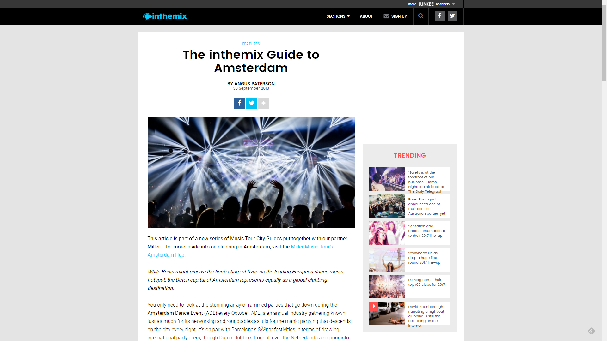

The inthemix Guide to Amsterdam
{kind=link}

While Berlin might receive the lion’s share of hype as the leading European dance music hotspot, the Dutch capital of Amsterdam represents equally as a global clubbing destination.
You only need to look at the stunning array of rammed parties that go down during the Amsterdam Dance Event (ADE) every October. ADE is an annual industry gathering known just as much for its networking and roundtables as it is for the manic partying that descends on the city every night. It’s on par with Barcelona’s Sónar festivities in terms of drawing international partygoers, though Dutch clubbers from all over the Netherlands also pour into the capital for events across nearly 100 venues.
ADE is also a perfect example of how dance culture is ingrained in the fabric of Amsterdam. The ubiquity of ADE signage across the city is the same as any large industry conference – the message is clear: dance music is not a counter-culture in the Netherlands. Tens of thousands of music lovers take over the city for a whole week, and Amsterdam barely bats an eye. This year ADE celebrates 25 years of dance in Amsterdam, with several big exhibitions to mark the occasion. Seminal club scene photographer Cleo Campert has a history that stretches back to Amsterdam’s original house club RoXY, and she’ll curate two different exhibitions in the Red Light District. You’ll also be able to check out a massive outdoor gallery at Museum Square; otherwise home of the Van Gogh and Dutch National museums.
Many of Amsterdam’s key clubs can be found alongside the gorgeous canals of the city’s centre. They’re often no more than a 15-minute walk from the central train station, with many scattered across key sightseeing points like the Dam, Leidseplein and Rembrandtplein squares. There’s also the massive calendar of festivals, which seems to swell in number every year, with many taking place over the summer in one of the green, flat plains not far out of the city; though there’s an impressive amount of spectacle-filled stadium parties too. The nearby city Utrecht used to represent heavily with its legendary Jaarbeurs convention centre, though the newly opened Ziggo Dome is drawing many of these events back to Amsterdam.
The Dutch, they love their dance music
Those with a diverse interest in the entire spectrum of dance music will take the most away from a clubbing holiday in Amsterdam – it’s a city that has just as much time for the underground side of dance as it does the cheesy, crowd-pleasing elements. The world-famous Dutch trance sound, responsible for leviathans like Armin van Buuren, Tiesto, Sander van Doorn and Ferry Corsten, barely even scratches the surface in terms of what you’ll find in the city, and arguably hasn’t represented the Dutch identity for quite a few years.
That said, Armin still holds enough sway to warrant two massive shows this November at Amsterdam’s Ziggo Dome, where he’ll be launching the next edition of his ‘Armin Only’ world tour. In its heyday, Amsterdam’s trance scene could boast the legendary Trance Energy parties that drew 40,000+ sellout crowds, though that eventually morphed into the more EDM-focused Energy brand, with the Electronic Family outdoor festival becoming one of the city’s last remaining bastions of the trance cause.
There’s little doubt, though, that the Dutch love, love, love their hardstyle. The three-day Defqon.1 Festival happens just 90 minutes outside of Amsterdam every June and draws a daily crowd of over 50,000 punters; it typically sells out within minutes. The Dutch affinity with hard dance goes way back to the infamous hardcore scene of the early ‘90s, and countless other similarly themed parties happen across the Netherlands every year. To offer an even clearer picture of Amsterdam’s hardstyle mania though, about a third of the 60,000 tickets sold every year for ID&T’s multi-genre Mysteryland are bought for the Qdance stage alone. And the euphoric energy at these parties has to be seen to be believed.
Arguably, though, it’s ‘serious business’ house and techno that is truly the sound of Amsterdam. Solomun and his Diynamic Music crew chose the city as the place to launch its very first festival this year, while the city’s Dekmantel crew also staged their first three-day festival in August to resounding success (and the very same weekend as Mysteryland, no less). These newcomers join the huge on-going success of brands like Awakenings and FORMAT, as well as the throngs of regular underground club nights and parties across the city. Notably, the Dutch throw just as much energy into their hard techno as they do into music on the more commercial end of the spectrum. There’s no room for pensive chin stroking, and the soaring energy at Amsterdam’s techno parties is also something that deserves to be witnessed in person.
If that’s all too serious for you, though, you’ll still be well catered for in Amsterdam. The motto of the GirlsLoveDJs crew is “hard pop with a nod to the girls,” while the gloriously silly Dirty Dutch brand, trail-blazed by the likes of Chuckie and Laidback Luke, regularly packs out festival tents and stadium arenas. Then you have the new wave of EDM heavyweights like Hardwell, Nicky Romero, Dyro and beyond who are storming festival main-stages around the world. In Amsterdam, there’s a whole lot of dance music love to go around. Feeling ready for a holiday? With ADE on the horizon, let us walk you through the perfect Amsterdam experience, the inthemix way.
Things to do before the club
1. Get out of the Red Light District
While the salacious delights of Amsterdam’s infamous Red Light District are the draw-card for many tourists, it’s increasingly becoming a tourist trap that’s less and less representative of the Dutch experience; it’s not likely to be overly conducive to a proper Amsterdam clubbing holiday either. And when it comes to hostels, don’t even think about making that mistake.
Our recommendation for an affordable, comfortable and friendly place to stay would be Hostel Van Gogh, close to its namesake’s museum and a ten minute tram ride from Amsterdam Central Station – and more importantly, a short walk from all the clubs located near Leidseplein. You’ll also be on the doorstep of the outdoor exhibition of dance photography that’ll be on display during ADE.
Hostel Van Gogh
Address: Van de Veldestraat 5, 1071 CW, Amsterdam
Website: www.hostelbookers.com/Amsterdam
2. Hire a bike
Amsterdam is one of the most famous bike cities in the world, with dedicated bike lanes on nearly every road, where cyclists are notoriously given right of way over even the pedestrians. This manifests in an almost insanely kamikaze bike culture, with first-time tourists often stumbling witlessly into their path, only to be shocked back onto the sidewalk again by a devastating sharp look and the shrill ring of a bicycle bell.
Hiring a bike is definitely the best way to take in the gorgeous architecture and canals of Amsterdam, a city’s that’s often disarming in its beauty. Our recommendation is Star Bikes Rental, more affordable than its competitors and offering the traditional Dutch ‘granny bike’ for a more authentic cycling experience. Find them right behind Amsterdam Central Station.
Star Bikes Rental Amsterdam
Address: De Ruyterkade 127, 1011 AC, Amsterdam
Website: www.starbikesrental.com
3. Buy some clubbing apparel
Like all proper dance culture hotspots around the world, in terms of fashion, to go partying in Amsterdam you need nothing more sophisticated than sneakers, jeans and a t-shirt to get you through the door. If you’re looking to stock up on some cool local fashions though, Shirtshop is a great place to start.
The store prides itself on its lack of global brands (“brand = bland”), and is always on the hunt throughout Europe (“from Italy to Scandinavia”) for the coolest boutique fashions, with a focus on the affordable. And their garments are definitely both casual and clubbing friendly.
The Shirtshop
Address: Reguliersdwarsstraat 64, 1017 BM Amsterdam
Website: www.shirtshopamsterdam.com
4. Affordable Dutch dining and drinks
If you’ve made the smart choice and put your roots down outside of the Red Light District, you also might want to venture into the fashionable Jordaan district to check out a centuries-old Dutch dining establishment in the form of Cafe ‘t Smalle. Boasting a legacy that stretches back to the 18th century, it’s picturesquely situated right on a canal where you can watch the boats pass by, and take “beer guidance” from the staff. While it’s affordable low-key dining rather than high cuisine, it’s renowned by locals and visitors alike as one of the more authentic establishments.
Café ‘t Smalle
Address: Egelantiersgracht 12, 1015 RL Amsterdam
Website: www.t-smalle.nl
5. The pre-club warm-up
If you’re heading to one of the clubs around Leidseplein and want a low-key spot for a few drinks beforehand, you can’t go wrong with Cafe Alto, which has free entry and late night live jazz seven days a week. Start things off on a relaxed note, before commencing the inevitable pounding of the eardrums with hard techno for the rest of the evening.
Jazz Café Alto
Address: Reguliersdwarsstraat 64, 1017 BM Amsterdam
Website: www.shirtshopamsterdam.com
Hitting up Amsterdam’s top clubs
Trouw
Address: Wibautstraat 127, 1091 GL Amsterdam
Website: trouwamsterdam.nl/en
Open: Fri & Sat: 22.30 – 05.00 (24hr license)
Continuing the fine tradition of some of the world’s best clubs by transforming an old industrial space into a haven of dancing and debauchery, Trouw is an old newspaper printing factory that has been refurbished into a nightclub. It’s arguably the finest club you’ll find in Amsterdam, and possibly one of the best in the whole of Europe. And Amsterdam itself agrees, recently rubberstamping it with a coveted 24-hour license, the only one currently operating in the city.
Trouw also functions as a broader cultural space, home to live music and events as well as its own restaurant. Crucially, though, it looks every bit the renovated industrial space that it is, characterised by its stark concrete walls, industrial lighting rigs and decommissioned printing presses, with shreds of old newspapers scattered throughout the club’s two levels.
A quick rundown of Trouw’s upcoming gigs gives an idea of its pulling power: during ADE it’ll host a swathe of excellent events including a showcase for the club’s Colours residency with Julio Bashmore, plus an Innervisions party featuring the usual revered suspects like Ame, Dixon and more.
Studio 80
Address: Rembrandtplein 17 1017 CT, Amsterdam
Website: www.studio-80.nl
Open: Wed, Thu, Fri, Sat: 23.00 – late
Located on the bustling Rembrandtplein alongside a fair few other fine clubbing establishments, Studio 80 is one of Amsterdam’s smaller iconic venues. Known as a breeding ground for upcoming and underground Dutch talent where they’re actually given a space to develop as artists, it generally avoids the big lineups in favour of Amsterdam stalwarts and future favourites.
There are two modestly sized rooms capable of hosting several hundred punters between them, as well as a particularly smoky mezzanine room. The front room is characterised by a podium in the middle of the dance-floor; though rather than being a spot for showponies, it’s more a place for Dutch dancefloor enthusiasm to be showcased in all its glory. Fist pumps ahoy.
A truly rollicking atmosphere develops in Studio 80 on its best nights, and ADE in October looks set to host a few of them, with the club shelving its typical low-key approach to programming for a few days. Wednesday night kicks off with both Dubfire and DJ Sneak, followed by parties hosted by Loco Dice, Gregor Tresher, Ricardo Villalobos, Chris Liebing and Laurent Garnier. Expect this teeny little venue to be rammed to the max.
AIR
Address: Amstelstraat 16 1017 DA, Amsterdam
Website: www.air.nl
Open: Thu, Fri, Sat, Sun: 23.00 – 05.00
If Trouw can be loosely compared to the industrial icon that is Berghain in Berlin, then AIR is Amsterdam’s very own superclub in the tradition of Space or Pacha. The club was outfitted by famed Dutch designer Marcel Wanders, and the spacious mainroom features strips of LED lights along the walls (not unlike the mainroom of Watergate in Berlin). Meanwhile, the side room has a plush, loungey vibe that feels appropriately intimate.
Reflecting the venue’s status as the superclub of Amsterdam, it will be hosting an impressive range of big-ticket clubbing brands during ADE. Kicking off with Defected in the House, it follows on with parties from All Gone Pete Tong and We Love…, as well as a showcase from the legendary FORMAT hard techno crew, which holds a residency at the club.
Melkweg
Address: Lijnbaansgracht 234A 1017 PH Amsterdam
Website: www.melkweg.nl
Open: open all week, various closing times (3am on Fridays and Saturdays)
Another of Amsterdam’s more interesting music spaces, Melkweg is definitely more than just a club. Again situated close to Leidseplein, it’s a former dairy factory renovated into a sprawling entertainment complex. The ground floor houses the two spaces primarily used for clubbing – the 1500-capacity Max and the 700-capacity Oude Zaal – while there’s also a cinema, a theatre and café, as well as a recently added third hall designed for seated concerts.
Melkweg will host the official opening party of this year’s ADE, a special event celebrating 25 years of dance music in Amsterdam and hosting an assortment of Dutch heroes including Michel de Hey, Joris Voorn, Steve Rachmad, Quazar and Secret Cinema among others, with an audio-visual show that traverses the city’s rich history. Otherwise, Melkweg will be hosting parties featuring Dave Clarke, John Digweed and Danny Tenaglia through the week.
Paradiso
Address: Weteringschans 6-8 1017 SG Amsterdam
Website: www.paradiso.nl
Open: Closing times vary
Another venue near the clubbing-friendly Leidseplein is Paradiso, a converted old church that opened in 1968, with a large stage that’s overlooked by two balconies and towering stained glass windows. With its excellent acoustics and 1500-capacity main room, it’s popular for both DJ gigs and live performances, and has been for four decades – Nirvana and The Rolling Stones have been among the names to play Paradiso, and it was central to the birth of rave culture in Amsterdam in the late-80s.
These days, Paradiso has a packed weekly schedule of live bands and DJs every day, ranging from local residents to hyped internationals, and for a bit of light-hearted fun its reliable Saturday night party Megamatjesdisco is a mish-mash of retro-electro, indie hits, party pop and R&B. For more serious sounds, the Paradiso portfolio during ADE really sheds some light on the eclectic nature of the Amsterdam scene. Chuckie will be taking over with his Dirty Dutch brand, there’ll be a live show from Moderat, plus Andy C will host a showcase for his RAM Records label.
Gashouder
Address: Wibautstraat 131 Amsterdam
Website: www.westergasfabriek.nl
Open: Hours vary depending on event
Not really a ‘club’ in the sense of it hosting regular events, Gashouder is a convention hall that rates a special mention as one of the most spectacular venues for large-scale techno events you could possibly imagine. Situated right in the middle of the city’s gasworks complex, it’s another refurbished industrial building with an amazing sense of scale – when first built in 1902, it was the largest gas container in the whole of Europe. Now it’s a large, pillar-less chamber with an iron roof and huge mezzanine space that holds 3,500 punters.
During ADE it’ll host four massive parties from the powerhouse Awakenings crew. Luciano and Carl Craig will open the festivities on Wednesday night, followed by label parties from Carl Cox, Richie Hawtin and Adam Beyer, with a Sunday finale from Fritz Kalkbrenner. Huge stuff.
What to do after the club?
Grab a sophisticated snack
Everybody knows how vital it is to grab some greasy food to soak up the booze after exiting the club. If you’ve been partying at one of the fine establishments in the Rembrandtplein area, there’s no better choice than Burger Bar. Loads of choices and fresh as can be, it boasts some of the best burgers in Amsterdam. The smart person’s choice for a late night snack.
Burger Bar
Address: Warmoesstraat 21, 1012 HT Amsterdam
Website: www.burger-bar.nl
Angus Thomas Paterson is a former inthemix Editor and freelance journalist currently based in Berlin.